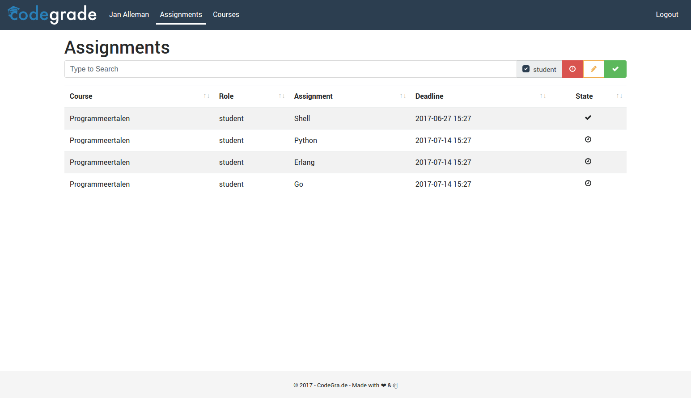

User Manual CodeGra.de¶
Pages¶
assignments¶
This is the first page you will see when you login. From here you can access all your assignments. 
Workflows¶
Student:
When you log in as a student, you are automatically go to the assignments page. Here all the upcomming deadlines can be found. Three buttons allow you to toggle filters for the states an assignment an be in; submitting, grading, done. After you click on an assignment you can submit a file as well as see all previous submissions for that assignment. Also on this page you can view the rubric that will be used for grading (if a rubric is used). A Student can submit his/her assignments by uploading a single .tar.gz/.tar/.zip which contains the code, and maybe a PDF. If an assignment is labled ‘done’ a student can check his/her grade as well as read the given inline and general feedback. From the code viewer a student can download the submission and/or all given feedback.
Teacher:
The basic idea for teachers is that they, or teaching assistants can add assignments to existing courses and grade them once submitted by students. While grading you can click on individual lines of code and add direct inline feedback to them. From the courses page CodeGrade lets you easily devide submissions ready for grading over all, or some, TA’s by clicking on ‘manage course’. From here you can click on the assignment and a dropdown menu will apear where you can determine which TA’s you want do devinde between Devision is done randomly and assigned submissions can always be reassigned. In the previously mentioned drop down menu you can also run linters on all submissions. Linter errors will show up in the submissions as red linenumbers.
 . Once assigned a TA can switch between viewing all
submissions and all submissions assigned to him or her. While grading
an assignment, you switch to next or previous submission!! as well as
select any submission from a dropdown menu. You can also return to
the submission page. From here you can export the table with (graded)
submissions as a csv file. A hand full of extra options are available
for this feature -insert gif of export menu-.
. Once assigned a TA can switch between viewing all
submissions and all submissions assigned to him or her. While grading
an assignment, you switch to next or previous submission!! as well as
select any submission from a dropdown menu. You can also return to
the submission page. From here you can export the table with (graded)
submissions as a csv file. A hand full of extra options are available
for this feature -insert gif of export menu-.
LTI integration of CodeGra.de¶
Integration with LTI is not completely intuitive. In this document we try to describe the special cases where the integration doesn’t work as you would expect. When LTI is activated these things change:
- In general LTI takes precedence. Everything get’s created via LTI (courses/assignments/TA’s/deadlines etc.). You can only change these details via LTI.
- To update/change details of an assignment an LTI launch request needs to be fired. This only happens when an assignment is accessed from the LTI provider. So when the teacher has updated for example the deadline, (s)he should open the assignment to update the details on codegra.de
- In our system an assignment has 3 states (hidden/open/done). When LTI is integrated the hidden and open state are managed by LTI.
- Only when the assignment is done, all grades are sent back to LTI.
- You can’t upload blackboard .zip files.
F.A.Q¶
General questions¶
How can I see all assignments for one course?¶
Search for the course on the assignments page, or click in the top menu on
courses, and then click on the green list button  to the right of
a course.
to the right of
a course.
Student questions¶
How can I see my grade?¶
Find the assignment on the assignments page. Click on the assignment. If the assignment is graded one can see their grade now.
TA questions¶
How do I access a courses management page?¶
Click on in the top menu on courses. From this page one can see all the
courses they are enrolled in / can manage. To edit a course’s details, click on
the orange pencil  on the right of the course name. Now you can
see all the assignments of this course. Click an assignment to edit it’s
details. - How can I divide the submitted submissions for an assignment over
the TA’s? Click in the top menu on courses. Click on the orange pencil
to the right of a course. Click on an assignment. Here one can
edit all the details of an assignment. - How can I run a linter over all
submitted submissions for an assignment? Click in the top menu on _courses.
Click on the orange pencil to the right of a course. Click on an
assignment. Here one can edit all the details of an assignment.
on the right of the course name. Now you can
see all the assignments of this course. Click an assignment to edit it’s
details. - How can I divide the submitted submissions for an assignment over
the TA’s? Click in the top menu on courses. Click on the orange pencil
to the right of a course. Click on an assignment. Here one can
edit all the details of an assignment. - How can I run a linter over all
submitted submissions for an assignment? Click in the top menu on _courses.
Click on the orange pencil to the right of a course. Click on an
assignment. Here one can edit all the details of an assignment.